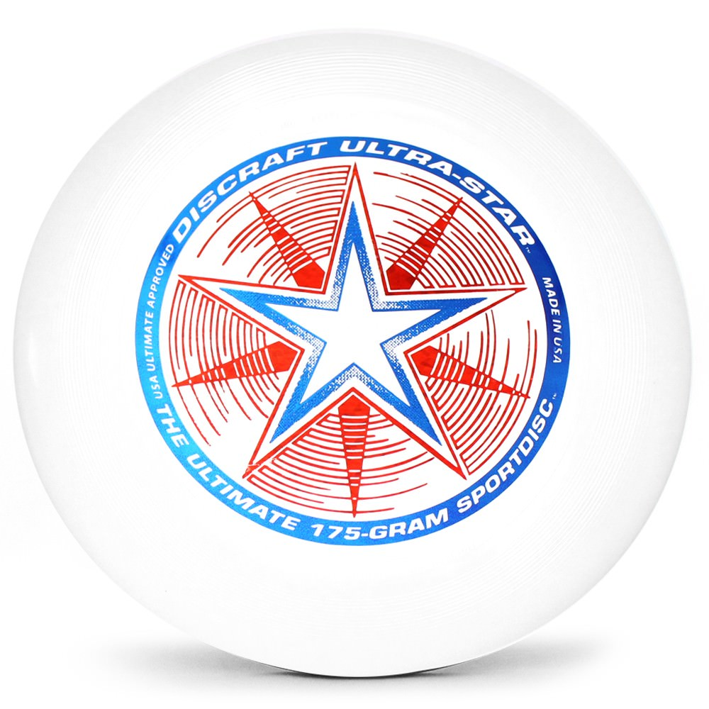
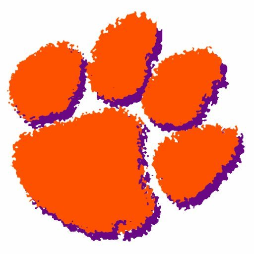
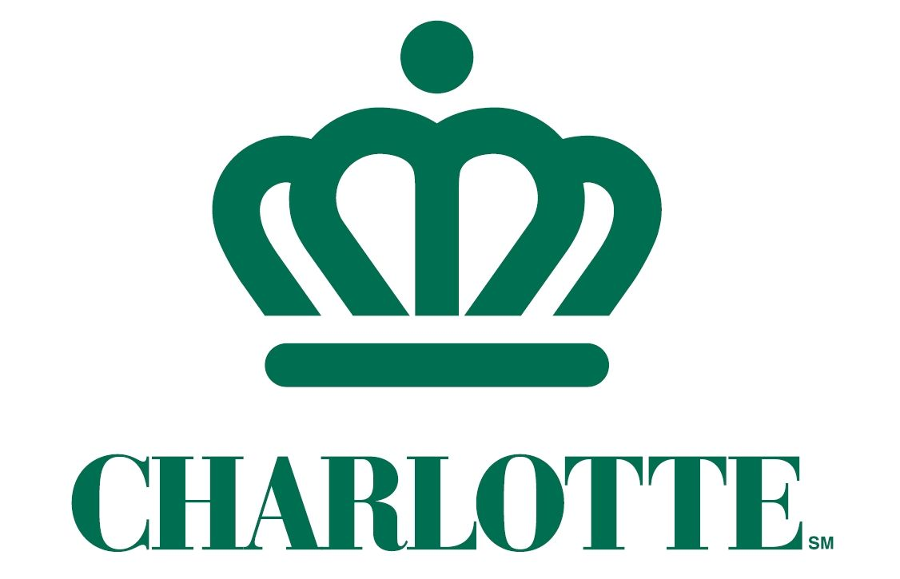
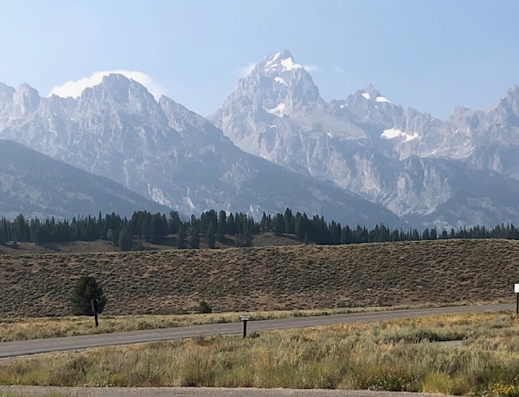

Pravin was born in Columbia, South Carolina on March 15, 1991. He has two older sisters, Nisha and Rachna. From an early age, Pravin had an appreciation for sports. He played basketball, soccer, baseball, and tennis before making it to high school. In the eighth grade, he made the varsity tennis team at Dutch Fork High School in Irmo, SC. He played for the team for almost 5 years until a new sport caught his eye. Before his senior year of high school, he started playing ultimate frisbee with his friends. He continued playing ultimate frisbee while he attended Clemson University. He played on the B-team for the club team for one year until a knee injury sidelined him. He came back to play in intramurals, going undefeated and winning a championship along the way.


After graduating in 2014, Pravin returned to Columbia and began working at a manufacturing company as part of the purchasing department. He continued to play ultmate frisbee during the summer with the Columbia Ultimate Disc Association (CUDA). After two years being back in Columbia, Pravin decided he needed another change of scenery. His next move was to the Queen City of Charlotte, North Carolina. He moved in with his sister, Nisha, in late May 2016 and began working with one of the banks that call Charlotte home. Pravin continued playing ultimate frisbee in Charlotte with a group of friends he knew from Clemson, winning another championship during a summer league.
Pravin has gone to a variety of locations in his life. He has gone to India five times in his life to visit family that still reside in the country. He has also gone to Malaysia and Singapore on family vacations. Domestically, he has visited the Pacific Northwest multiple times to visit family in Oregon. If you asked him what trip was his favorite, he would quickly say the first solo trip he took to Jackson Hole, Wyoming in August 2018. While in Wyoming, he visited Grand Teton and Yellowstone National Parks. One day, while eating lunch atop a mountain, he decided to go paragliding and it turned out to be one of the most exhilarating experiences of his life.
